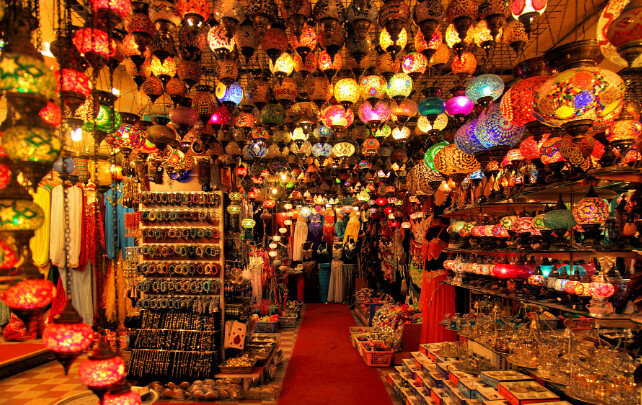
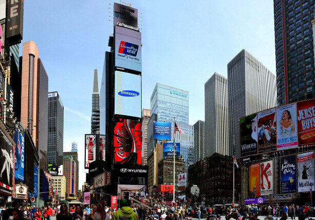
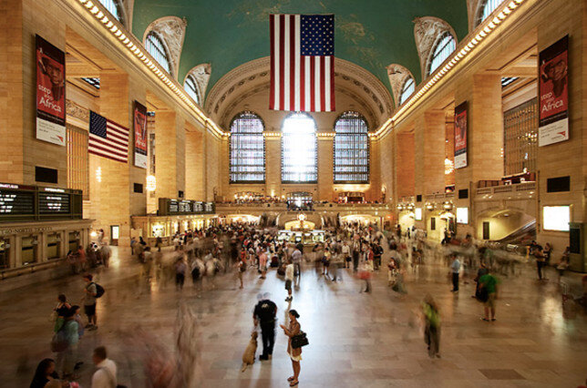
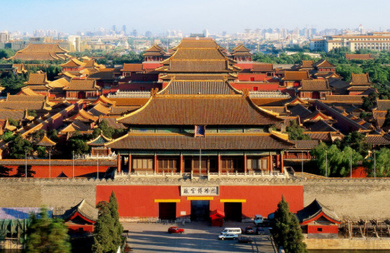
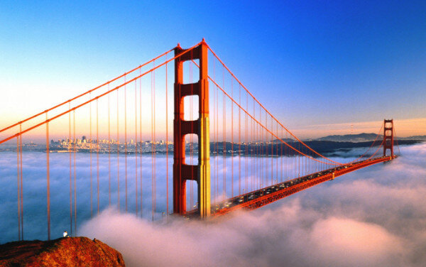

Большой базар (Стамбул, Турция)

Большой базар появился в Константинополе в XV веке и считается одним из первых в мире торговых пассажей.
Ежегодно через него проходит неимоверное количество посетителей
– больше 91 миллиона!
На его территории 66 улиц, а на них работают больше 4 тысяч магазинов, базар стал
отдельным микрорайоном города.
Читать ещё ->
Таймс-сквер (Нью-Йорк, США)

Эта площадь является главным коммерческим районом нью-йоркского Мидтауна.
По посещаемости, доходящей в год до 50 млн человек, с этой площадью трудно тягаться любой другой
достопримечательности мира.
Горящую яркими огнями рекламы и билбордов Таймс-сквер американцы часто называют «перекрёстком мира».
Читать ещё ->
Гранд Централ (Нью-Йорк, США)

Центральный вокзал Нью-Йорка находится на пересечении Парк-авеню и 42-й улицы в пределах среднего
Манхэттена.
Это самый большой в мире железнодорожный терминал – на нём расположены 44 платформы и сюда сходятся 67
путей. К тому же, это и самый старый нью-йоркский вокзал.
Удивительно, но он также стал городской достопримечательностью, например, в 2013 году на него решило
взглянуть около 22 миллионов человек.
Каждый день сюда приходит порядка 750 тысяч человек, при этом пассажиром является только каждый третий из них.
Читать ещё ->
Запретный город (Пекин, КНР)

Китайский императорский дворец, называемый «Запретным городом», находится в самом центре Пекина.
В нём жили императоры, начиная с династии Мин, здесь же проводились торжественные церемонии, решались
важнейшие политические вопросы на протяжении пяти столетий.
На территории Запретного города около 980 различных строений, а дворцовый комплекс сейчас превращён в
музей.
Ежегодно сюда приходит свыше 14 млн иностранных и местных туристов, делая Запретный город самым
посещаемым
музеем в мире.
Читать ещё ->
Мост «Золотые ворота» (Сан-Франциско, США)

Этот красивый мост красного цвета давно стал символом Сан-Франциско.
Он переброшен через одноимённый залив и связывает Сан-Франциско с округом Марин.
Это один из самых фотогеничных мостов мира. Его длина 2737 метров.
Ежегодно сфотографироваться на фоне моста приезжает свыше 10 миллионов туристов.
Читать ещё ->
Ещё больше информации вы найдёте здесь!